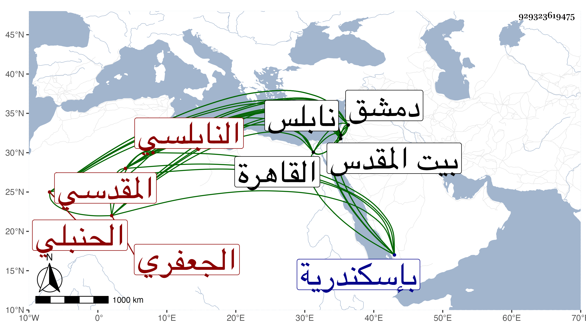

0902Sakhawi.DawLamic.ITO20230111-ara1.EIS1600.929323619475
Biography ID: 929323619475
289
محمد بن محمد بن عبد القادر بن محمد بن عبد القادر بن عثمان بن عبد الرحمن الكمال بن البدر الجعفري المقدسي النابلسي الحنبلي الماضي أبوه . ولد بنابلس ونشأ بها فحفظ القرآن والوجيز وغيره وعرض على العز الكناني واشتغل على أبيه ثم بدمشق وغيرها على التقي بن قندس وغيره وقدم القاهرة فأخذ عن العز الكناني وقرأ عليه كثيرا من كتب الحديث وغيرها وطلب قليلا ولازمني حتى قرأ القول البديع وغيره من تصانيفي وغيرها وكتب عني في الإملاء بل استملى ... علي في بعض الأوقات وناب عن العز ومن بعده وكذا ناب بدمشق بل ولي قضاء بلده استقلالا ثم قضاء بيت المقدس وغيرها ولم تحمد سيرته ونسب إليه مزيد الرشا مع خبرته بالأحكام وتميزه في الصناعة وفي القضابل ومشاركته ومزيد تودده وكرم أصله . مات في إحدى الجماديين سنة تسع وثمانين بإسكندرية غريبا رحمه الله وعفا عنه .
